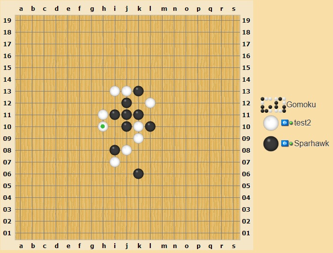

About the Project
Gomoku, also known as Five in a Row, is a classic board game played on a grid where two players take turns placing their pieces (usually black and white stones) on the intersections of the lines. The objective of the game is to be the first to form a row of five consecutive pieces vertically, horizontally, or diagonally.
Features
- Classic Gomoku gameplay
- Single-player and multiplayer modes
- Customizable board size
- Various difficulty levels
Technology Stack
The game is developed using C++ programming language and utilizes various libraries for graphics rendering and user interface.
Platforms:
- Windows
- Linux
Libraries/Frameworks:
- SFML (Simple and Fast Multimedia Library)